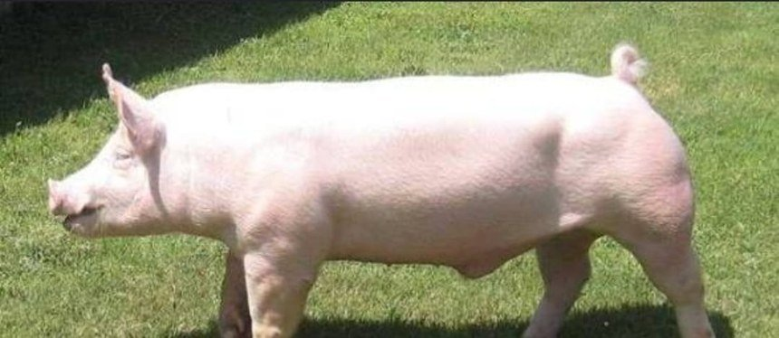

HOMOCLAVEREI_C_121Sano
| Peso al nacer | 65 |
| Peso destete | 55 |
| Ganancia peso | 30 |
| Consumo diario leche | 43 |
| Consumo alimento | 90 |
| Edad al destete | 66 |
| Perimetro | 7 |
| Dias tratamiento | 0 |
| Vigor nacer | 25 |
| Consumoo calostro | alto |
| Salud general | sano |
| Consistencia heces | normal |
| Reflejo | fuerte |
| Condicion umbilical | sano |
| Apetito | bueno |
| Aspecto pelaje | brillante |
